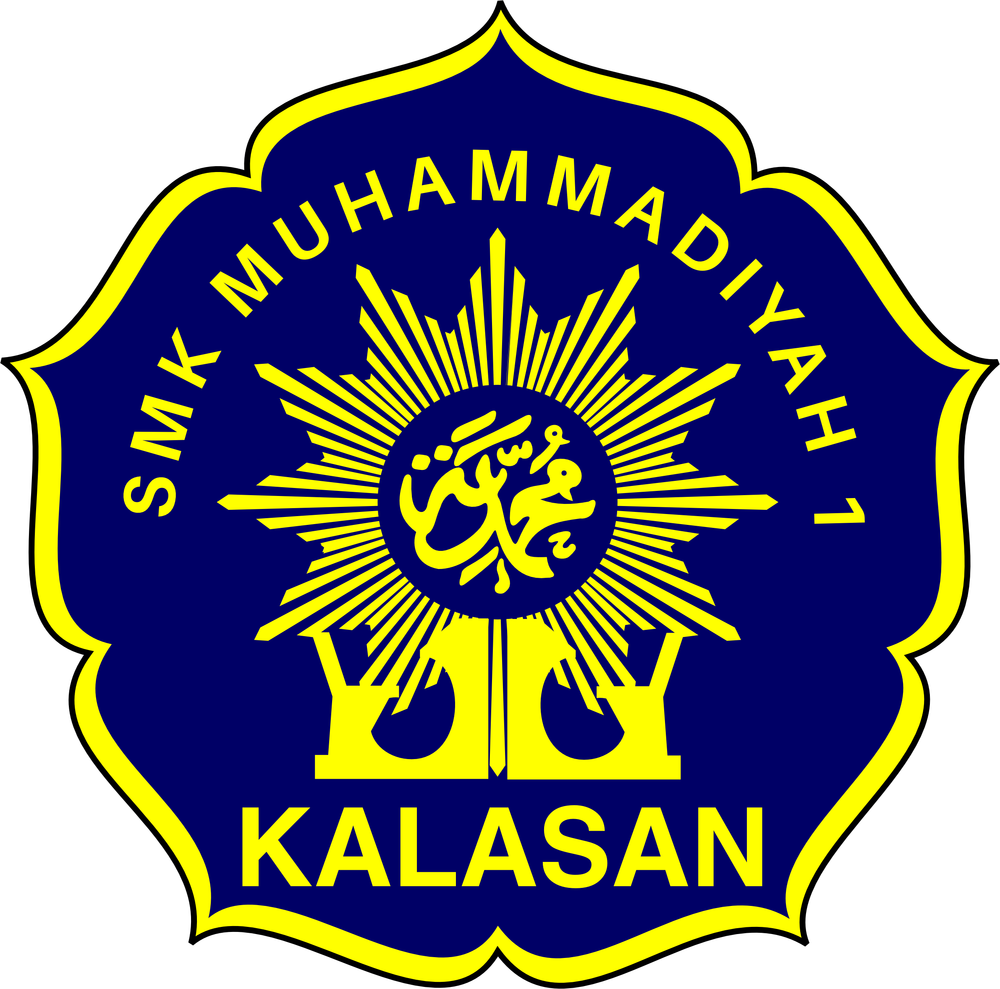
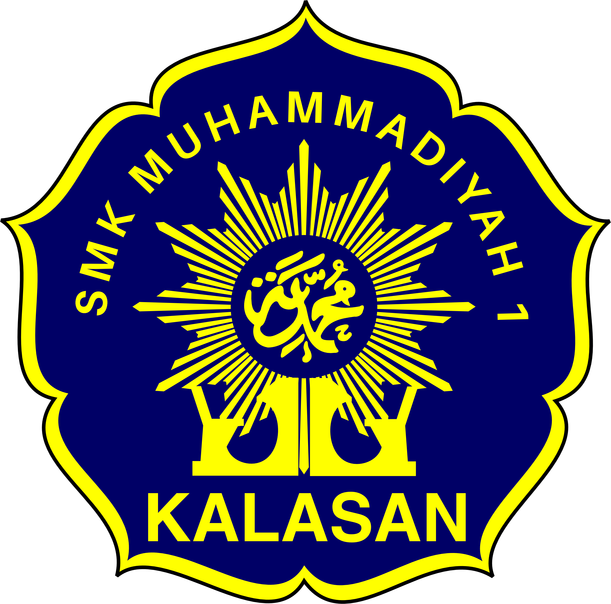

Selamat Datang di Website SMK Muhammadiyah 1 Kalasan
Tentang Sekolah Kami
SMK Muhammadiyah 1 Kalasan yang berdiri pada tanggal 17 April 1996 mempunyai komitmen untuk mencetak SDM yang unggul agar dapat terserap di lapangan pekerjaan...
SMK Muhammadiyah 1 Kalasan dari segi sumber daya dan sistem manajemen telah cukup siap menyongsong dan melaksanakan paradigma baru pemerintah dalam peningkatan kualitas pendidikan...
SMK Muhammadiyah 1 Kalasan berkomitmen untuk selalu meningkatkan kualitas dan pelayanan pendidikan...